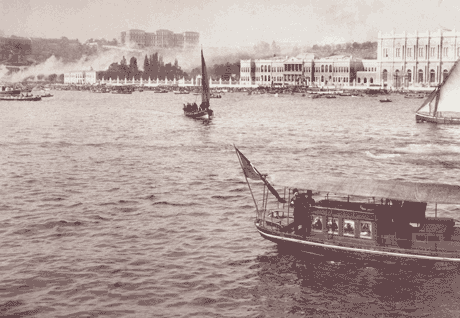
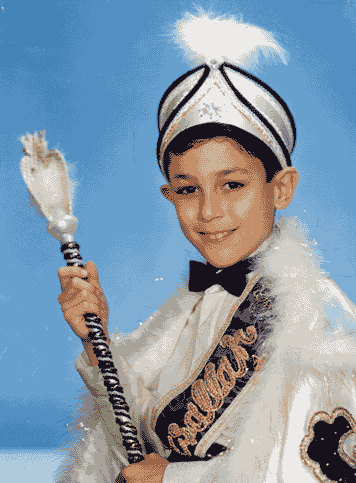

THE CIRCUMCISION REFERENCE LIBRARY
Ayhan Verit M.D.
Sanliurfa, Turkey
It is a reality that one sixth of the world is circumcised, and circumcision is widely practiced in all Islamic countries, so also in Turkey. Circumcision is believed to be one of the features of a `heliolithic' culture about 15,000 years ago and has spread over much of the world. People speculate that it might have originated independently within several cultures depending on evidence that inhabitants of the new world and Australian aborigines were circumcised when these continents were discovered (1-2). The observation of 6,000 years old circumcised mummies point to the fact that this may be one of the oldest surgical procedure (2).
Although female circumcision has never been performed among Turkish tribes, male circumcision is generally performed in Turkey (prevalence @ 99%) at any time between the period of birth and marriage, generally before the school age according to the Islamic and traditional points of view (3). Although festivities surrounding circumcision are not a strict traditional rule, most of the Turkish families are sympathetic towards this custom. These festivities may vary according to the region and the age of the young man to be circumcised.
Circumcision Ceremonies at the Ottoman Palace
These fantastic ceremonies, described in detail by Nil Sari
et al., performed from the 16 through the 18 century,
reflected the importance of the circumcision celebrations
organized by the ruling class of the empire (4). The most popular locations for these
festivities such as the Topkapi Palace, the Sultanahmed
Square and the Golden Horn, were replaced by the Dolmabahce
Palace after the middle of 19th century (fig.1).

Figure 1: A scene from Bosphorus a hundred years ago and Dolmabahce, the last Ottoman Palace, at the back side in which there is a special room for the circumcised prince, nowadays on display in the Harem region.
Celebrations for the circumcision ritual of a Prince generally lasted 10-15 days and in some exceptional cases, might even last up to 50-55 days. As part of the celebration, besides carrying out the princes' circumcision, surgeons also performed circumcisions of 3,000 to 10,000 boys of poor families and gifts such as clothing, underwear, toys and gold coins were given to these children (4). Although gold coins have been replaced by money in today's economy, surprisingly, this kind of gift tradition; especially the attaching of a gold coin to the dress of the circumcised boy by his relatives, is still continuing.
Two high-ranking Ottoman officials escorted the princes to the special room prepared for circumcision in the Harem (women's part of the palace). The Dolmabahce Palace has a special permanent room with a lovely decorated small bed in the Harem region, designed for the circumcised prince for the postoperative period and only his mother and sisters were permitted to enter this floor (4).
Festive activities continued ceaselessly, night and the day, such as hunting, sporting events, illuminations, fireworks, dramas, songs and the feasts, but all of this was not only designed for the entertainment of the Sultan and high officials but also for the common citizens. Janissaries (Ottoman soldiers) played war games while fireworks masters, poets, and artists displayed their talents (4). Decorated palm trees with fruits, animal figures, flowers, and shiny materials, resembling huge Christmas trees, were the symbols of the Sultan's power and authority in the society and some of those trees were recorded to be 6 m wide 15 m high (4). A literary type called surname, which is unique among the world literature, was written for each of these festivities and as well as for weddings of the Sultan's daughters (4). It can be said that weddings and circumcision ceremonies had equal importance in the social life of the Ottoman Palace.
Present…
The industrial revolution has had a profound influence on
people's social lives in almost every part of the world, and
also in Turkey. However, traditional circumcision ceremonies
still retain their importance within the community. Turkish
families widely accept circumcision as one of the milestones
in the lives of male children.

Figure 2: A happy boy in a circumcision ceremony with his festive garments that resemble a King's or a Sultans's dress. He probably also received a lot of gifts. P.S. The consent of the child and his parents were obtained.
Despite some attitude differences between generations, most of the people in Turkey still do not think that the circumcision procedure is a real surgical procedure and a fairly large amount of people prefer the circumcision procedure to be conducted outside the operation theatres and without doctors. This point of view originates from the traditional idea of most Turkish families that their son's circumcision procedure be carried out at their own homes with their family members and invited guests present and to also be able to conduct religious ceremonies accompanying the party or the feast. It is very interesting that at these celebrations, the child generally wears festive garments resembling a Sultan's or a King's dress (fig.2), and the guests and relatives attach gold coins, depending on their wealth, to his clothes. These parties also offer an opportunity for the family members and friends to come together as for wedding parties but the main aim is to make the celebration a success for all the children present. I myself attended a circumcision ceremony with a show team including a band of 20 janissaries in their original costumes and the circumcised boy and his friends seemed to be very happy. Municipalities organize big parties for the circumcision of the boys of poor families. I think all of these traditions are examples of traces of the Ottoman culture.
Unfortunately, mass circumcisions with traditional circumcisers that are commonly devoid of any medical training is still a big problem due to the fact that it occurs in up to 85% of cases in rural Turkey (3). Primary bleeding and infections are common complications with these sort of circumcisions and there are some reports in the literature of horrific complications of circumcisions such as glanular injury, gangrene of the penis and even amputation of the penis (2,3). Despite of this, the rate of parents who want to have their boys circumcised by doctors is still only 70%, even among the hospital staff (5).
Although circumcision is regarded as a minor surgical procedure, it is obvious that it sometimes results in major complications caused by unqualified hands. For ages, people in Anatolia from Ottoman to Turkey have been performing this ritual according to their own rules and the tradition of circumcision is retaining its importance in the community with some old traditional patterns.
Acknowledgement: I thank Imran San M.D., the photographer, for the digital design of the photographs.
References
[CIRP Note: For information on the psychological effects of circumcision on Turkish boys see: Psychological Effects of Circumcison by Gocke Cansever.]
http://www.cirp.org/library/cultural/turkey1/